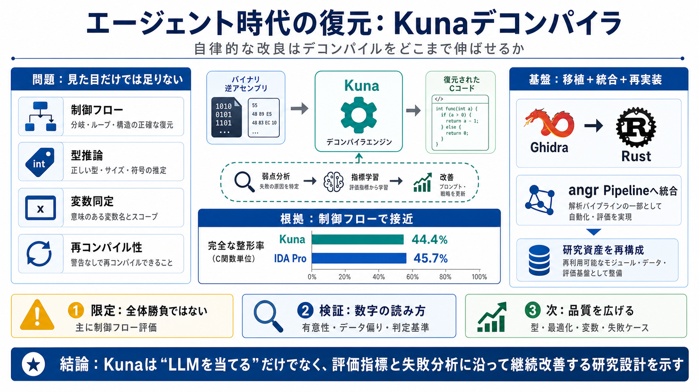

Decompile-Bench: Million-Scale Binary-Source Function ...
84.87 84.79 80.13 82.26 82.22 81.55 81.54 Table 9 summarizes the GPT evaluation results. IDA struggles with semantic ric…

コーディングエージェント（自律的にコード改善を試みる仕組み）の時代に、デコンパイラをどう進化させるかを考える。焦点は「自律的な改良（autonomous refinement）」が実測で効く可能性だ。
デコンパイルは制御フロー整形だけで終わらない。型推論、最適化の反映、変数同定、再コンパイル可能性まで同時に扱う必要がある。
Kunaの主張は「負けたケースを分析し、基礎指標に沿って集中的に学ぶと伸びる」。これは“LLMを当てる”より研究設計に近い。
C関数単位での制御フロー整形について、「完全な整形」が達成された割合がKunaは44.4%、IDA Proは45.7%とされる。差が小さいことが勝負の根拠になっている。
Kunaは「単独で完結した革新」より、GhidraのRust移植とangrのパイプラインへの寄せ、さらにangr機能の再実装（20以上）を基盤としていると位置づけられる。
改善の方向が「人間の価値観に整合する評価設計」に連動している点が鍵になる。評価指標がずれると、最適化されるものもずれる。
提示されている比較は主に制御フロー整形の指標で、デコンパイル全体（型・最適化・変数同定など）が同程度に改善したとは言い切れない。スコープに注意が必要だ。
「自律的な改良」はあるが、人間主導の科学的洞察（評価指標・ベンチマーク設計など）が不可欠だとされる。つまり研究土台は支援される。
44.4%と45.7%は接近しているが、統計的有意性、テストセットの偏り、関数難度や種類の内訳、判定誤差などが抜粋だけでは不明。過信はできない。
LLMが“ほぼ全てのコード行を生成した”という点は解釈が分かれる。速い生成は価値だが、設計の妥当性・安全性・保守性・再現性（別環境での同等性）の評価情報が必要になる。
現状の成功は主に制御フロー整形に寄っている。型・最適化・変数同定・再コンパイル可能性など、デコンパイル全体像の改善は未成熟として警告される。
Kunaは「エージェント×LLM×既存研究基盤」でデコンパイルを継続改善できる可能性を示す実験として意義がある。次は指標定義・学習手順・計測方法・限界ケース分析、さらに他品質への波及を確認する段階だ。
84.87 84.79 80.13 82.26 82.22 81.55 81.54 Table 9 summarizes the GPT evaluation results. IDA struggles with semantic ric…
Among LLM-based decompilation approaches, GPT-4o shows the highest semantic fidelity with a CER of 0.346, while GPT-4o-m…
Through a systematic compari-son between six industrial-strength decompil-ers and six recent LLM-powered approaches, we …
HOME PAPERS CODE AWARDS MEDIA BLOG ## Papers Google Scholar ### 2026 Oxidizer: Toward Concise and High-fidelity Rust…
condensed from 100 million collected function pairs, i.e., 450GB of binaries compiled from permissively licensed GitHub …